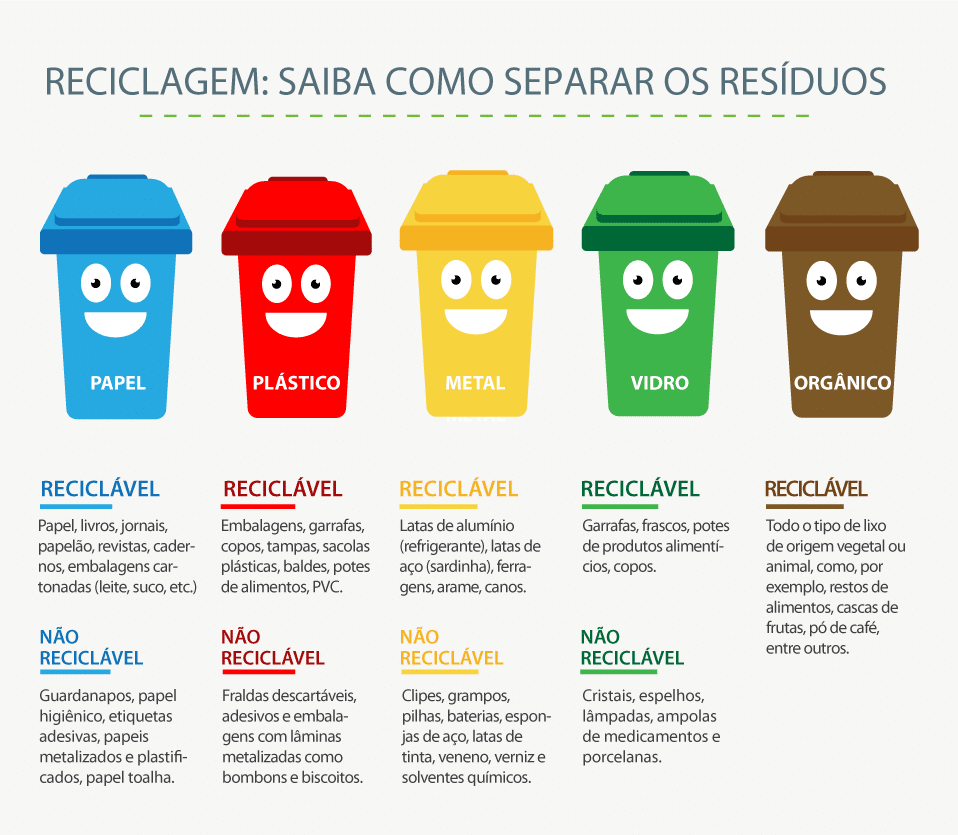

As cores comuns encontradas
Acompanhe os coletores de azul, vermelho, amarelo, verde e marrom.

Tema · Meio Ambiente
Estudantes em Faculdade de Tecnologia apresentam a iniciativa.
Abertura · 01
01 / ENTENDER
Uma maneira de identificar, separar e redirecionar os materiais descartados, de forma que possa promover um ambiente mais saudável para a sociedade.
Mesmo que isoladamente possa parecer simples ou insignificante, uma pequena semente também pode germinar em uma grande árvore com o passar do tempo e produzir frutos. Ou seja: os resultados podem ser retorno econômico — através da reciclagem —, um lugar mais bonito e uma vila mais organizada para viver com mais dignidade.
Acompanhe os coletores de azul, vermelho, amarelo, verde e marrom.

Abertura · 02
Assista e descubra como pequenas atitudes tornam o descarte mais consciente.
02 / ASSISTIR
Coleta seletiva · reciclagem e responsabilidade
Momento de conversa
Este é o momento para trocar ideias, compartilhar experiências e levar a coleta seletiva para mais perto da nossa rotina.
Consciência que transforma
Cada escolha no descarte pode ajudar a construir um ambiente mais saudável, bonito e digno para todos.